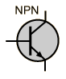

Junction Transistor Amplifiers
|  |
Since a junction transistor is a three-terminal device and there are four input-output terminals, one of the transistor terminals must be common to the input and output circuits. This leads to the names "common emitter", etc for the three basic types of amplifiers. |


Electronics concepts
| HyperPhysics*****Electricity and magnetism | R Nave |